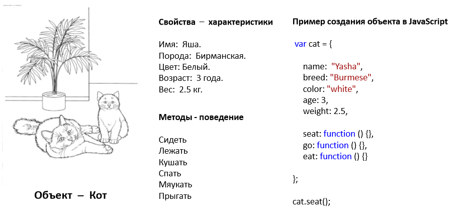

JavaSript
Объекты
- Что такое Объект
- Работа с объектом
Объекты JavaScript очень похожи на массивы, но для доступа к элементам объектов используются строки, а не числа. Эти строки называют ключами, или свойствами, а элементы, которые им соответствуют, — значениями. Вместе эти фрагменты информации образуют пары «ключзначение». Причем если массивы используются главным образом как списки, хранящие множество элементов, то объекты часто применяют как одиночные сущности с множеством характеристик, или атрибутов.

- Создайте объект криптокошилек. В кошельке должно хранится имя владельца, несколько валют Bitcoin, Ethereum, Stellar и в каждой валюте дополнительно есть имя валюты, логотип, несколько монет и курс на сегодняшний день. Также в объекте кошелек есть метод при вызове которого он принимает имя валюты и выводит на страницу информацию. "Добрый день, ... ! На вашем балансе (Название валюты и логотип) осталось N монет, если вы сегодня продадите их то, получите ...грн. Вывод на страницу должен быть касиво формлен с использованием css и html.
- Создать объект "Документ", в котором определить свойства "Заголовок, тело, футер, дата". Создать в объекте вложенный объект - "Приложение". Создать в объекте "Приложение", вложенные объекты, "Заголовок, тело, футер, дата". Создать методы для заполнения и отображения документа.
JavaScript для детей 70-81
JavaScript для детей - ст176-188
дэвид флэнаган 6 издание - ст221-235